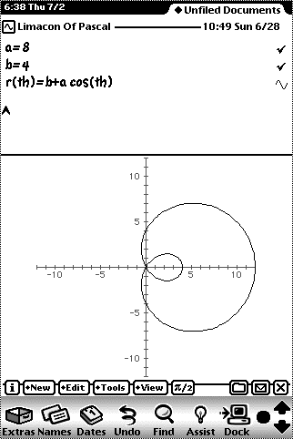

Many categories added
Handles complex math
Fit data to any size polynomial
Take the derivative and integral of any function
Find the maximum of any function
Solve for any equation
Weird functions
Polar graphs 